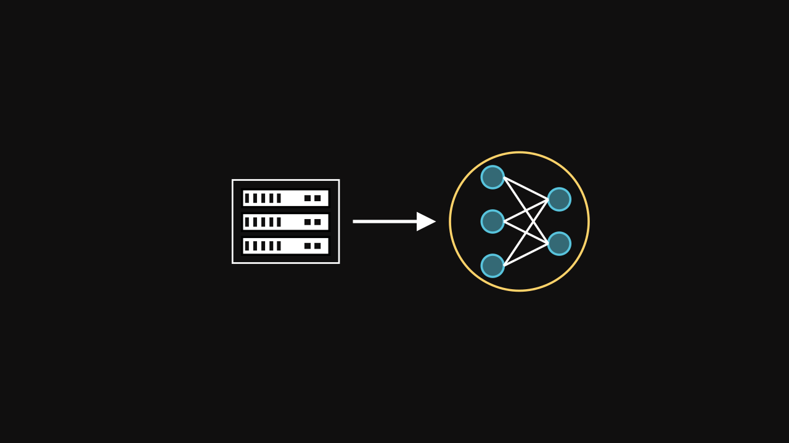
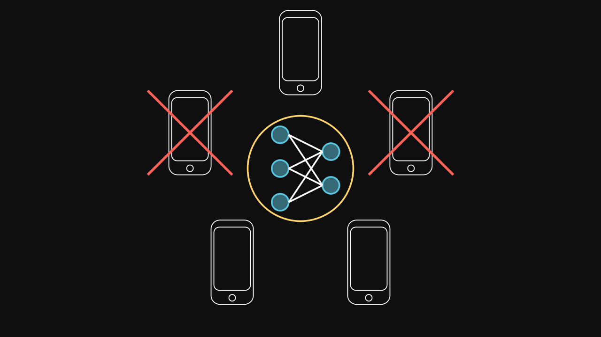

Federated Learning
Introduction
Federated Learning (FL) was introduced by McMahan et al. (2017) which has attracted increasing interest of ML researchers. They proposed a decentralized collaborative approach that uses multiple devices to train a global model without sharing their local data. In most cases, devices are limited in resources such as computation and communication and restricted by the usage of the user. Federated Learning can meet expectations of specific fields such as natural language processing, computer vision, health care, transportation, finance, smart city, robotics, networking, blockchain and others. In other words, the fact of training a model without exchanging local data gives an overview of new possibilities for taking advantage of each other while keeping privacy.
Overview
Federated Learning (FL) is a method where multiple devices (called clients) are led to collaborate together with communications to a central server in order to train a global model while protecting privacy. In other words, instead of sharing the local data of users, only updates of local models on clients’ devices are communicated to the server.
FL can be applied in various situations. For instance, in mobile phones there is a large amount of data, which is private by nature. The data could be acquired through GPS locations, microphones or cameras for example. If we want to build a global model such as takes account all contributions of all mobile phones, there are risks and responsibilities to deal with private data. FL aims to build a joint Machine Learning model (ML) without sharing local data. This technique could help diverse fields to collaborate together in order to train a global model that would be used by all participants. For instance, in hospitals, where privacy about health data, is the most important criterion, they could build an organization to perform an ML model in collaboration and every of them would take advantage of each other while keeping privacy. Another way to see FL application is when the implementation of the algorithm is fully decentralized. In other words, when FL architecture is based on peer-to-peer, communications between the server and devices are not required. For example, this approach offers new types of applications such as attack detection model that could be developed jointly by multiple banks.
Federated Learning step by step
Context
For this example, we introduce a server and cellphones as the starting point. The server leads communications with cellphones. Cellphones are the requested devices for this example. The goal is to exploit the private data of cellphones without sharing them to the server.
Note on the figure, only five devices are represented, but in a real world application, millions of devices could interact with a server (or an infrastructure) in order to apply the Federated Learning.
Initialization
At the beginning of the FL process, a global model is initialized by the server. It can be a neural network or any kind of models (e.g. a decision tree).

Selection
The FL works with rounds where some devices are selected to train the global model on their local data. Every round, devices are selected randomly or arbitrary based on known information about them. The selection part is a crucial part because some devices could be unavailable for a moment or may have different performances of computation and communication (straggler problem). As well, because the private data is not communicated, the distribution of data is managed with difficulty. Also, it might be impraticable if all devices are selected every round.

Uploading the global neural network
Once devices are selected, the server upload the parameters of the global model for all devices.
Training
Each device trains their local model on their private data.
Downloading the local trained neural networks
The server collects parameters of all local models.
Aggregation
The local models are aggregated into a new global model. For instance, it can be done by computing the weighted average of the global loss function :
\[ F_g(w) = \sum_{i = 1}^N \eta_i F_i(w) \]
where \(\eta_i\) indicates the relative impact of each part of the global model and \(F_i(w)\) is the loss function of each dataset \(D_i\). For more information, check McMahan et al. (2017).
Restart
Once the new global model is computed, the process is restarted until the objective is reached (for instance by maximizing the accuracy).
Complete process
References
- H. B. McMahan, E. Moore, D. Ramage, S. Hampson, and B. A. y. Arcas, “Communication-Efficient Learning of Deep Networks from Decentralized Data,” arXiv:1602.05629 [cs], Feb. 2017, arXiv: 1602.05629. [Online]. Available: http://arxiv.org/abs/1602.05629
- Application of Reinforcement Learning to improve the selection and the aggregation of Federated Learning (Github)